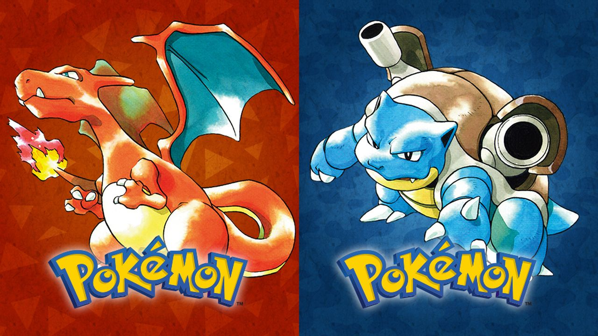
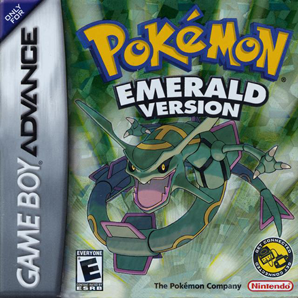
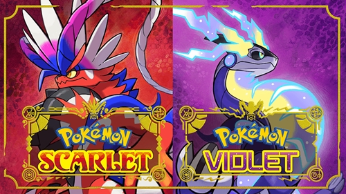
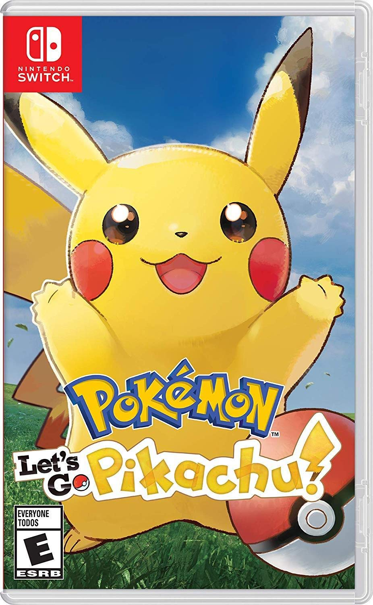
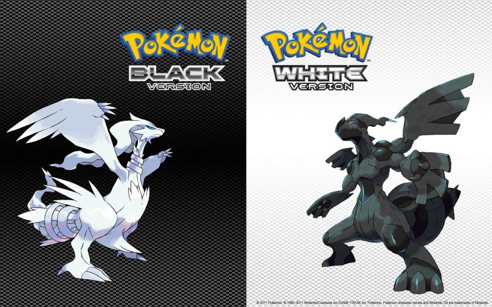

Os jogos eletrônicos são o coração da franquia Pokémon. Lançados inicialmente pela Game Freak para o Game Boy, eles inauguraram o gênero de RPG de captura e troca de monstros, dividindo-se ao longo dos anos em várias gerações.
Cada nova geração traz uma nova região, novos Pokémon, mecânicas inéditas e melhorias gráficas. Desde os clássicos Pokémon Red e Blue em 1996 até os títulos mais recentes em mundo aberto como Pokémon Scarlet e Violet, a essência de explorar, capturar e batalhar permanece a mesma.
Abaixo estão os principais jogos da franquia:

Os jogos que iniciaram a febre mundial no Game Boy. O objetivo é capturar os 151 Pokémon originais, derrotar os 8 líderes de ginásio e vencer a Elite dos Quatro.

Versão definitiva da terceira geração para Game Boy Advance. Introduziu as batalhas em dupla e a incrível Batalha da Fronteira, além de focar nos lendários Groudon, Kyogre e Rayquaza.

A grande revolução da franquia para o Nintendo Switch, trazendo uma experiência totalmente em mundo aberto, três histórias principais e a mecânica de Terastalização.

Uma releitura charmosa dos clássicos de Kanto para o Nintendo Switch, trazendo mecânicas de captura inspiradas em Pokémon GO e a companhia inseparável do Pikachu.

Ambientado na inspiradora região de Unova, este título marcou a franquia por trazer uma história mais profunda sobre a relação entre humanos e Pokémon, além de introduzir 156 novas espécies inéditas sem reutilizar os antigos no início.